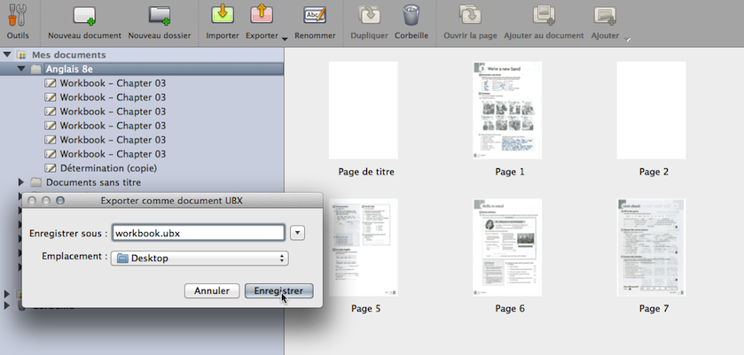

L'onglet "Documents" permet désormais l'export et l'import par lot.

Il suffit tout d'abord de regrouper les documents (.ubz) dans un dossier. Sélectionnez le dossier que vous désirez exporter et appuyez sur le bouton "Exporter", option "Exporter au format UBX Open-Sankoré".
Le logiciel génère alors un fichier (.ubx) que vous nommez et enregistrez dans l'emplacement désiré.
Pour importer un fichier (.ubx), passez par le bouton "Importer" du mode "Documents".